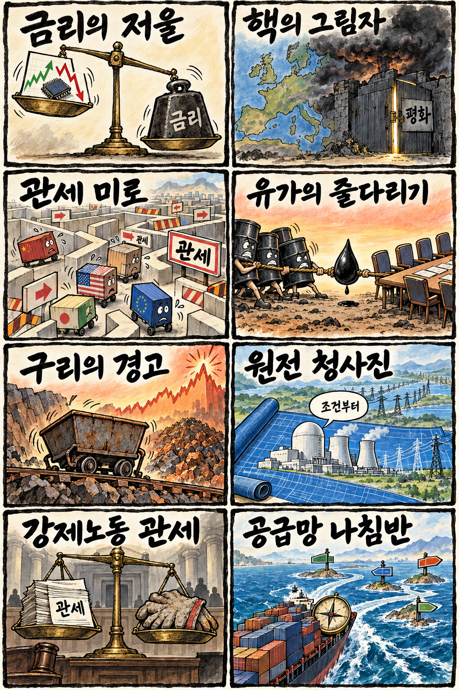
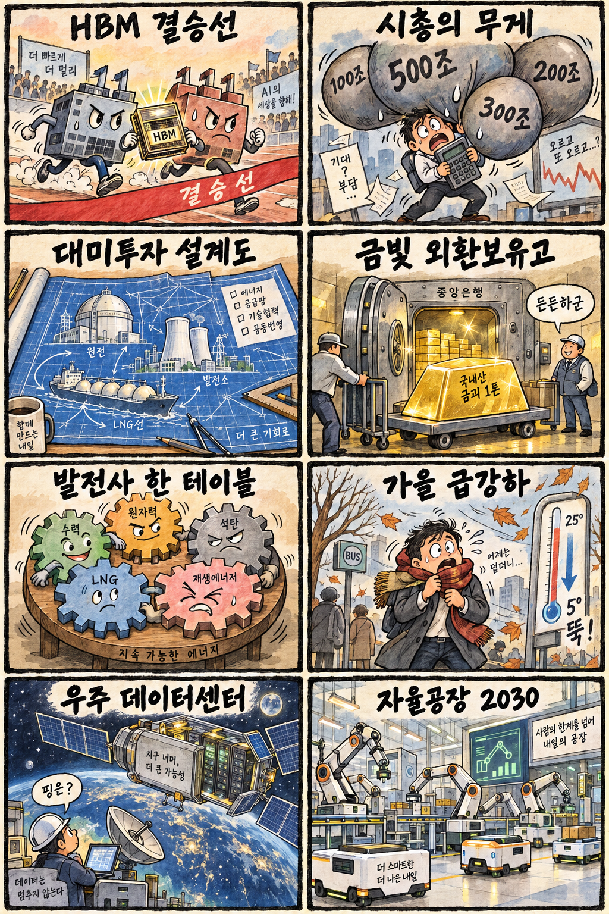

01
인텔 · 116.05→120.23달러 · +3.60%
내용요약 시가 대비 +3.60% 올라 조사 종목 중 가장 강했습니다.
예상여파 반도체 투자심리에 우호적이지만 개별 종목 상승을 국내 대형주 추격 근거로 쓰지 않습니다.
MORNING_BRIEFING_20261001
작성 시각: 2026-10-01 06:39 KST · 직전 미국 정규장과 2026-10-01 KST 당일 공개 기사 기준
직전 미국 정규장인 9월 30일 뉴욕증시는 다우 -0.86%, S&P 500 -0.25%, 나스닥 +0.24%로 혼조 마감했습니다. 장기금리 부담 속에서도 기술주가 상대강도를 보였습니다. 한국 증시는 전날 KOSPI가 -0.48%이고 시가 대비 -1.52%로 밀린 반면 KOSDAQ은 +0.72%로 상승해 대형주와 중소형주의 차별화가 이어질 수 있습니다.
| 지수 | 종가 | 등락률 | 한국 증시 시사점 |
|---|---|---|---|
| 다우존스 | 50,906.05 | -0.86% | 금리 부담과 경기 민감주 변동성 |
| S&P 500 | 7,651.54 | -0.25% | 금리 부담과 경기 민감주 변동성 |
| 나스닥 종합 | 26,861.06 | +0.24% | 기술주 상대강도, 반도체 선별 대응 |
다우 -0.86%, S&P 500 -0.25%, 나스닥 +0.24%로 기술주만 상대강도를 보였습니다.
전일 종가 -0.48%, 시가 대비 -1.52%로 대형주 부담이 컸습니다.
마이크론 실적과 전망이 예상을 웃돌아 HBM 수요 기대를 뒷받침했습니다.
06:30 장전 기준을 모두 통과한 종목이 없어 현금 관망을 유지합니다.
9월 30일 보고서는 공식 추천을 내지 않았습니다. 게시 당시 판단을 유지하며 사후 종목을 추가하지 않습니다.
| 시장 | 종가 | 등락률 | 기준 |
|---|---|---|---|
| KOSPI | 6,838.04 | -0.48% | 9월 30일 정규장 · 시가 대비 -1.52% |
| KOSDAQ | 855.91 | +0.72% | 9월 30일 정규장 · 시가 대비 +0.13% |
| 다우존스 | 50,906.05 | -0.86% | 미국 9월 30일 정규장 |
| S&P 500 | 7,651.54 | -0.25% | 미국 9월 30일 정규장 |
| 나스닥 종합 | 26,861.06 | +0.24% | 미국 9월 30일 정규장 |
인텔이 시가 대비 +3.60%로 조사 종목 중 가장 강했습니다.
액센츄어가 +2.96%로 기업 기술투자 관련 상대강도를 보였습니다.
스트래티지 -4.81%, 코인베이스 -4.64%로 위험선호 약화가 두드러졌습니다.
월마트 -2.85%, 홈디포 -2.04%로 소비 관련주가 약했습니다.
내용요약 시가 대비 +3.60% 올라 조사 종목 중 가장 강했습니다.
예상여파 반도체 투자심리에 우호적이지만 개별 종목 상승을 국내 대형주 추격 근거로 쓰지 않습니다.
내용요약 시가 대비 +2.96%로 IT서비스의 상대강도를 보였습니다.
예상여파 기업 인공지능 전환 수요에는 긍정적이나 신규 수주와 마진을 함께 확인해야 합니다.
내용요약 시가 대비 -4.81%로 조사 종목 중 낙폭이 가장 컸습니다.
예상여파 가상자산 위험선호 약화가 국내 관련주의 변동성을 키울 수 있습니다.
내용요약 시가 대비 -4.64%로 가상자산 거래 플랫폼도 동반 약세였습니다.
예상여파 거래대금과 가상자산 가격에 민감해 국내 핀테크 관련주 추격을 경계해야 합니다.
내용요약 시가 대비 -3.12% 하락해 산업재 대형주 중 약세가 두드러졌습니다.
예상여파 항공·산업재 심리에 부담이 될 수 있으나 기업별 수주와 공급망 요인은 별도 확인이 필요합니다.
전날 KOSPI는 6,838.04로 전일 종가 대비 -0.48%, 시가 대비 -1.52%였고 KOSDAQ은 전일 종가 대비 +0.72%, 시가 대비 +0.13%였습니다. 밤사이 나스닥과 인텔·액센츄어는 강했지만 다우와 가상자산 연계주는 약했습니다. 마이크론 호실적은 국내 HBM 심리에 우호적이나 전날 KOSPI 장중 약세와 장기금리 부담을 고려해 시초가 갭 추격보다 외국인 수급 확인이 우선입니다.
오늘은 추천 없음 — 현금 관망
06:30 장전 시점에는 당일 시가·호가 유동성·당일 수급을 확인할 수 없고, 전날 KOSPI 약세와 미국 기술주 상대강도가 엇갈립니다. 종합점수 75점·상승확률 60%·예상 손익비 1.5를 모두 실제 데이터로 검증한 후보가 없습니다.
관심 연결종목 HBM·반도체 장비, 전력·원전, 기업용 AI는 개장 뒤 상대강도 관찰 대상일 뿐 매수 추천이 아닙니다. 시초가 급등 종목은 추격매수하지 않습니다.
HBM 전망이 국내 대형 반도체 수급으로 연결되는지 봅니다.
나스닥 강세가 금리 부담을 이겨내는지 확인합니다.
원전·발전소·LNG 프로젝트의 확정 범위와 계약 주체를 구분합니다.
큰 일교차와 강풍에 따른 교통·건강 영향을 점검합니다.
핵심 요약: 마이크론의 실적과 전망이 AI 메모리 수요를 재확인했고, 구글은 차세대 모델 경쟁을 이어갔습니다. 자체 AI칩·우주 데이터센터로 인프라의 범위가 넓어지는 동시에 미국 규제기관의 안전·소비자보호 점검도 강화되고 있습니다.
내용요약 국산 인공지능 반도체와 태양전지를 우주 환경에서 검증해 궤도 데이터센터 기술 기반을 마련한다는 당일 보도입니다.
예상여파 우주 인프라는 장기 성장 분야지만 발사 비용·내방사선 설계·통신 지연을 실제 실증 성과로 확인해야 합니다.
내용요약 구글이 차세대 플래그십 인공지능 모델 ‘아르곤’을 공개해 오픈AI·앤트로픽과의 경쟁을 강화했다는 당일 보도입니다.
예상여파 모델 성능 경쟁이 클라우드 사용량과 개발도구 선택에 영향을 줄 수 있으며 비용·안전성·기업 도입 사례가 관건입니다.
내용요약 마이크론이 인공지능 메모리 수요를 바탕으로 시장 예상을 웃도는 실적과 전망을 제시했다는 당일 보도입니다.
예상여파 HBM과 서버용 메모리 업황에는 긍정적이지만 국내 종목은 이미 높아진 기대와 장전 갭을 함께 봐야 합니다.
내용요약 아마존이 반도체 설계자동화 기업 시놉시스와 10억 달러 이상 규모의 협력으로 자체 인공지능 칩 개발을 가속한다는 보도입니다.
예상여파 클라우드 사업자의 자체 칩 경쟁은 설계도구 수요를 늘리는 반면 범용 가속기 공급망의 경쟁을 심화할 수 있습니다.
내용요약 미국 연방거래위원회가 오픈AI·앤트로픽 등 인공지능 기업의 보안과 소비자 위험을 조사한다는 당일 보도입니다.
예상여파 생성형 AI 기업의 안전 통제와 정보공개 의무가 강화될 수 있어 규제 준수 비용과 기업 도입 기준이 높아질 수 있습니다.
핵심 요약: 러시아의 핵 위협과 미국의 관세 법정 공방이 안보·교역 불확실성을 높였습니다. 미·이란 협상 교착으로 유가가 반등했고, 칠레 생산 부진 속 구리 가격 강세가 공급망 비용을 압박하고 있습니다.
내용요약 나토가 러시아의 핵 위협에 대해 임박한 징후는 없다며 동맹 분열 의도를 경계했다는 당일 보도입니다.
예상여파 유럽 안보 위험 프리미엄은 이어지겠지만 즉각적 확전 신호와 외교적 수사를 구분해 볼 필요가 있습니다.
내용요약 미국의 강제노동 연계 관세 권한을 둘러싼 법정 공방이 시작됐다는 당일 보도입니다.
예상여파 판결 방향에 따라 수입 규제의 적용 범위와 기업의 공급망 실사 비용이 달라질 수 있습니다.
내용요약 미국 의회 구도가 바뀌면 한미 투자사업이 감독 대상이 될 수 있지만 관세 틀은 유지될 가능성이 있다는 자문사 분석입니다.
예상여파 장기 프로젝트는 정치 일정과 승인 절차 변수를 반영해야 하며 확정 계약과 발표 단계 사업을 구분해야 합니다.
내용요약 미국과 이란의 협상 교착, 석유제품 재고 감소로 국제유가가 약 1% 상승했다는 당일 보도입니다.
예상여파 운송·화학 업종의 비용 부담과 물가 경계가 다시 높아질 수 있으며 중동 공급 회복과 협상 진전을 함께 봐야 합니다.
내용요약 구리 가격이 사상 최고권인데 세계 최대 생산국 칠레의 생산량이 15년 만의 낮은 수준이라는 당일 보도입니다.
예상여파 전력망·데이터센터·전기차 수요와 공급 제약이 맞물리면 산업재 가격 변동성이 이어질 수 있습니다.

핵심 요약: 차세대 HBM 공개와 마이크론 호실적은 반도체 기대를 높였고, 대미 투자 구상은 원전·발전·LNG 공급망의 장기 기회를 제시했습니다. 한은의 금 매입과 발전 5사 통합 논의가 시작된 가운데 오늘은 쌀쌀한 출근길과 큰 일교차에 유의해야 합니다.
내용요약 삼성전자와 SK하이닉스가 10월 국내 반도체 전시회에서 차세대 HBM 기술을 공개한다는 당일 보도입니다.
예상여파 기술 로드맵과 고객 인증 일정은 업황 기대를 뒷받침할 수 있으나 행사 공개만으로 단기 실적을 단정해서는 안 됩니다.
내용요약 미국 측이 한국의 대미 투자 구상에 발전소·원전·알래스카 LNG를 포함해 발표했다는 당일 보도입니다.
예상여파 건설·전력·기자재 공급망에는 기회가 될 수 있지만 정부 간 합의와 기업별 계약·수익성은 따로 확인해야 합니다.
내용요약 한국은행이 12월 국내산 금 1톤을 매입해 13년 만에 금 직접투자를 재개한다는 당일 보도입니다.
예상여파 외환보유 자산 다변화 신호로 볼 수 있으나 원화와 금 가격에 미치는 단기 영향은 제한적일 수 있습니다.
내용요약 발전 5사 통합 논의를 위한 통합준비위원회가 출범했다는 당일 보도입니다.
예상여파 발전 공기업의 투자·조달 구조와 인력 배치가 바뀔 수 있어 통합 범위와 일정, 전력시장 제도 개편을 지켜봐야 합니다.
내용요약 10월 첫날 찬 공기가 내려와 아침 최저 8도 안팎, 중부내륙 일교차 최대 15도가 예상된다는 당일 예보입니다.
예상여파 출근길 보온과 호흡기 건강, 강풍 구간 교통안전에 유의하고 농작물 냉해 가능성도 점검해야 합니다.
